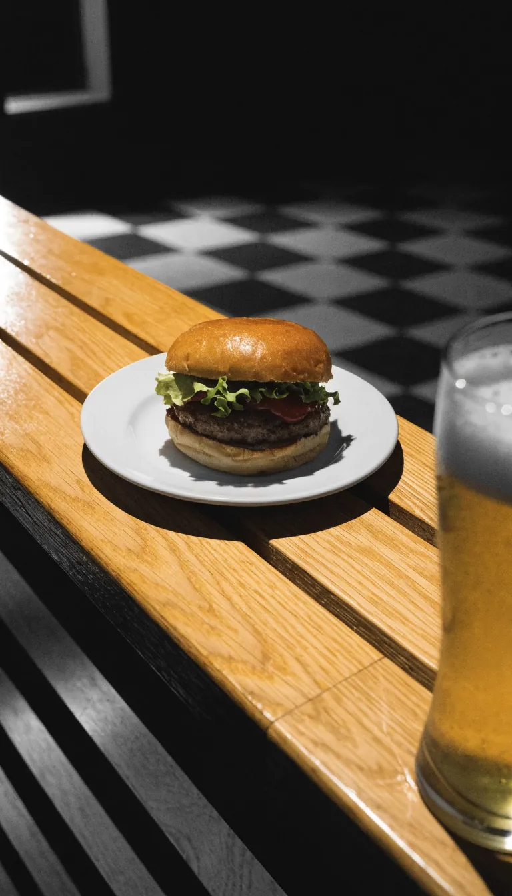

Gambas
Garnelen als Tapa, zum Teilen.
Tapas & Sports Bar · Heubergredder 38
 Foto: Roxie · Google Maps
Foto: Roxie · Google Maps
Täglich ab 12:00 geöffnet
Kleine Teller an der Theke, das Spiel auf dem Schirm, die Pfanne am Tisch.
Zwölf Felder, ein Tisch: die Tapas der Veranda. Die ganze Karte mit Preisen liegt vor Ort aus, am Telefon lesen wir sie gern vor.
 a4–b3Foto: I. S. · Google Maps
a4–b3Foto: I. S. · Google Maps
Garnelen als Tapa, zum Teilen.
Grüne Bratpaprika mit grobem Salz.
Zum ersten Bier.
Die vegetarische Tapa.
Süß gegen salzig.
Die kräftigere Tapa.
Gehört auf jeden Tisch. Der Eröffnungszug.
Abholen & Lieferung
040 5111457Mo–Do und So
12–23Uhr
bis Mitternacht
Täglich ab 12:00, dazu Kaffee.
vor Ort und am Telefon: 040 5111457
 Foto: Андрей Агєєнко · Google Maps
Foto: Андрей Агєєнко · Google Maps

KI-BildAb 12:00 Mittagstisch und Kaffee an der Theke. Abends Tapas, Wein und Bier – und das Spiel auf dem Schirm.
Freitag und Samstag bis Mitternacht. Fürs Spiel lieber vorher anrufen: 040 5111457.
An der Grenze von Winterhude und Barmbek, mit Plätzen draußen. Wer abholen will, ruft vorher an – dann steht es bereit.
Route in Google MapsTisch fürs Spiel?
040 5111457 Reservieren, abholen, liefern lassen. Täglich ab 12:00, Fr und Sa bis 00:00.